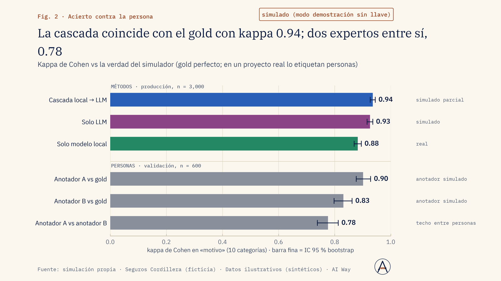
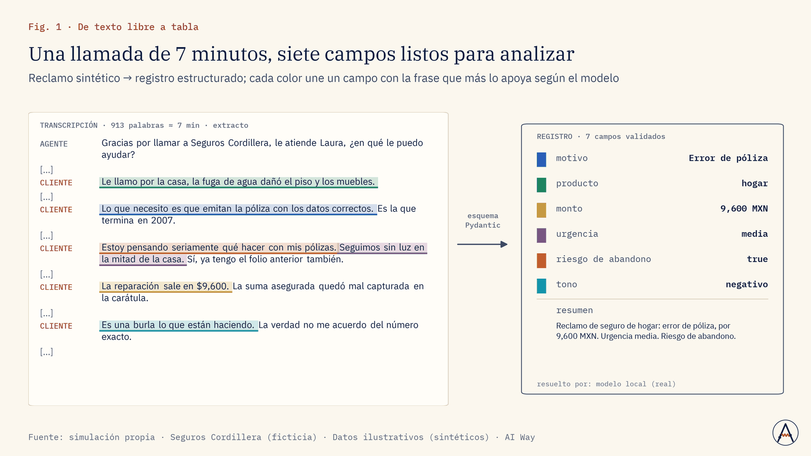
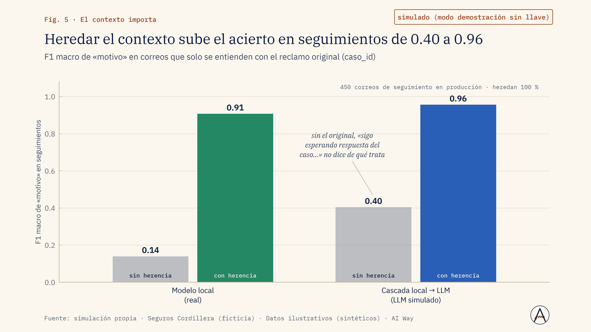

Servicio al cliente
¿Por qué nos reclaman este mes y qué motivo crece?
Clasificamos cada reclamo en motivo, producto y urgencia con salida validada y acuerdo medido.
Atacar primero el motivo que más crece, con el volumen real por canal.
Servicio · Nº 06
Miles de documentos, transcripciones, reseñas o expedientes convertidos en datos estructurados, con el acierto medido contra una persona y el coste por documento a la vista.
01 · El problema
Los equipos pasan horas leyendo y clasificando texto: reclamos, entrevistas, reseñas, contratos, reportes.
Probar un LLM es fácil; operarlo no: las respuestas cambian entre corridas, el coste se dispara, el proceso se cae a mitad y nadie midió si clasifica bien. Hace falta una automatización que diga cuánto acierta, cuánto cuesta y que se pueda reanudar.
02 · Enfoque
03 · Resultados de la demo
4,000 reclamos sintéticos (llamadas y correos) convertidos en registros de 7 campos con una cascada modelo local → LLM, medidos contra un gold con kappa, techo humano, reproducibilidad y coste por 1,000 documentos, y procesados en lotes con un checkpoint que se interrumpe a la fuerza y se reanuda. Las métricas que dependen del LLM son simuladas (modo demostración sin llave); el modelo local, el checkpoint y la bitácora de coste son reales.
Mismo acierto con 64 % menos coste
Fuente: simulación propia · Seguros Cordillera (ficticia) · Datos ilustrativos (sintéticos) · AI Way
La cascada usó 75 % del presupuesto
Fuente: simulación propia · Seguros Cordillera (ficticia) · Datos ilustrativos (sintéticos) · AI Way



04 · Límites declarados
05 · Aplicaciones de negocio
Ejemplos de decisiones que este servicio ayuda a tomar; el alcance se define en el diagnóstico.
Servicio al cliente
Clasificamos cada reclamo en motivo, producto y urgencia con salida validada y acuerdo medido.
Atacar primero el motivo que más crece, con el volumen real por canal.
Ventas
Extraemos objeción, producto y etapa de cada transcripción; el LLM entra solo si el modelo local duda.
Ajustar el guion comercial y la capacitación del equipo de ventas.
Marketing
Convertimos reseñas en registros de atributo y tono con un esquema fijo, por lotes reanudables.
Elegir qué atributo destacar en la próxima campaña.
Operación y costos
Una corrida piloto con cascada local → LLM y ledger de coste por documento estima el gasto.
Fijar presupuesto y decidir qué parte procesa el modelo local.
Riesgo y reputación
Marcamos menciones de riesgo con reglas y modelo local; lo dudoso va a la cola de revisión humana.
Escalar a tiempo los casos sensibles a legal o comunicación.
Dirección y estrategia
Ficha de calidad: kappa contra una persona experta, reproducibilidad entre corridas y errores típicos.
Decidir qué procesos automatizar y cuáles conservan revisión humana.
06 · Paquetes
Un tipo de documento, esquema de hasta 8 campos, gold de 300 ejemplos, ficha de calidad y procesamiento de un lote.
Duración típica: 2 semanas
Hasta 3 tipos de documento, cascada local + LLM, checkpoint y presupuesto, reprocesamiento mensual y guía de anotación.
Duración típica: 4 a 5 semanas
Operación continua con monitoreo de deriva y re-validación periódica, modelos locales para datos sensibles, integración con sistemas del cliente, audio y multilenguaje.
Duración típica: 8 semanas + operación
Sin precios publicados: cada propuesta se cotiza tras un diagnóstico de alcance.
07 · Preguntas frecuentes
Depende de la tarea; lo medimos con su propia muestra y se lo decimos por campo.
Puede correr con modelos locales; el LLM externo es opcional y configurable.
Se registran versiones y se re-valida contra el gold antes de cambiar.
Se estima con una corrida piloto y se fija un presupuesto.
08 · Descarga
Presentación de la demo (PDF, 1.8 MB). El caso completo: problema, método, resultados contra criterio y límites declarados.
Descargar PDFSiguiente paso
En una llamada de 30 minutos revisamos si se puede, cómo lo mediríamos y qué no te podemos prometer.
Otros servicios